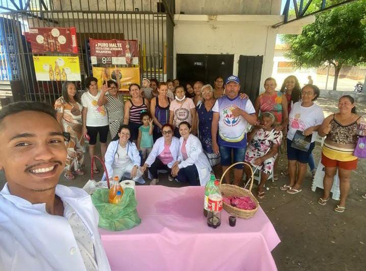
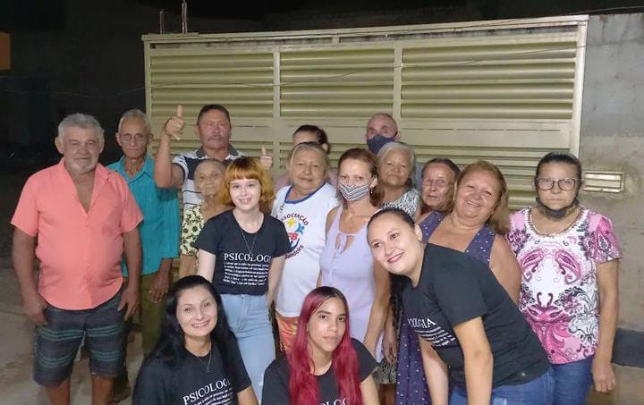

A Associação Comunitária Francisca Bandeira, fundada em 21 de junho de 2014, visa promover o desenvolvimento social e o bem-estar da comunidade, além de fomentar a interação entre os moradores. Seu nome é uma homenagem a uma profissional de saúde, querida pela população, que prestou importantes serviços ao bairro. A associação realiza assembleias mensais com reuniões, palestras, eventos e comemorações de datas especiais.
Nossas atividades

Reuniões mensais

Palestras e orientações profissionais.

Atividades recreativas e eventos culturais comunitários.